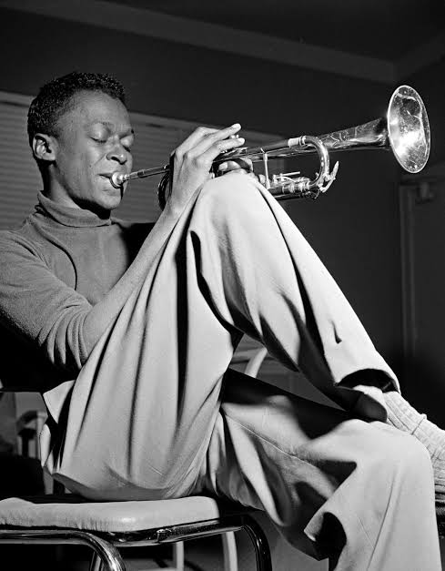
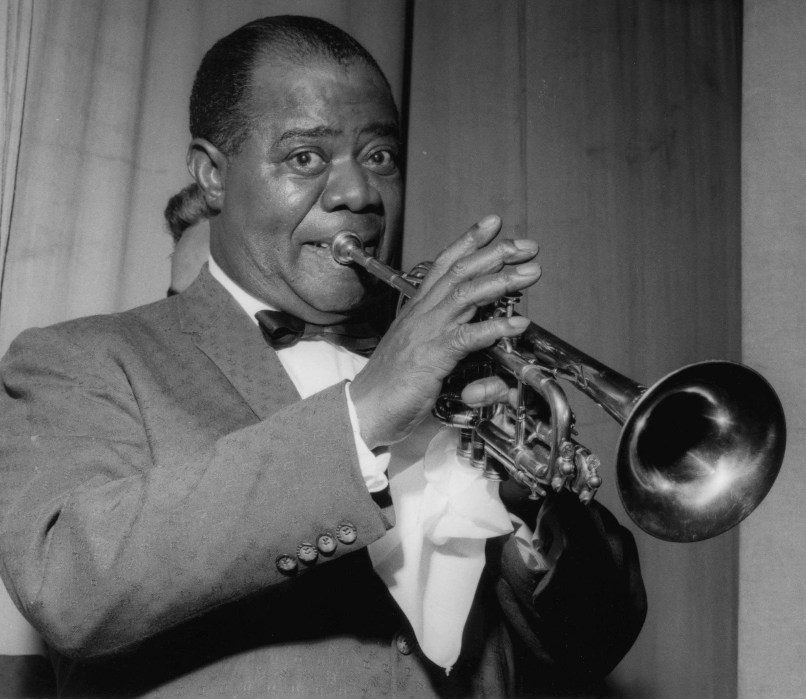
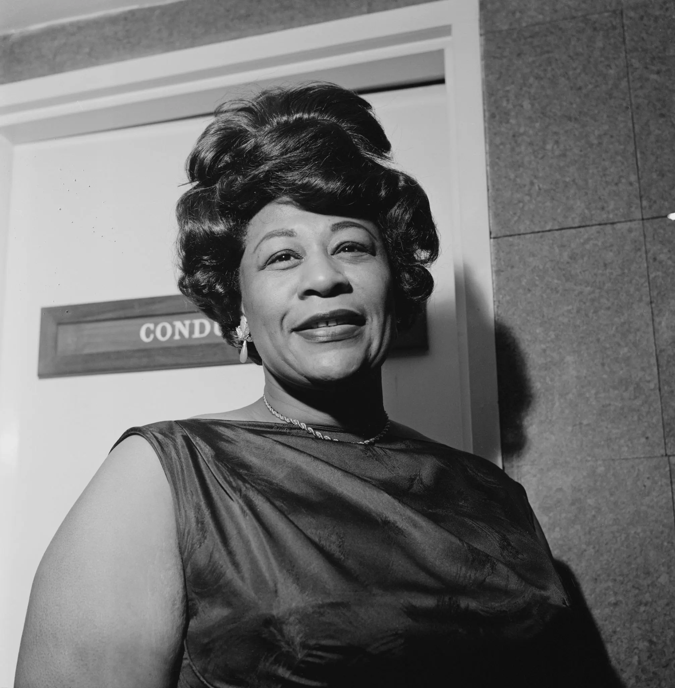
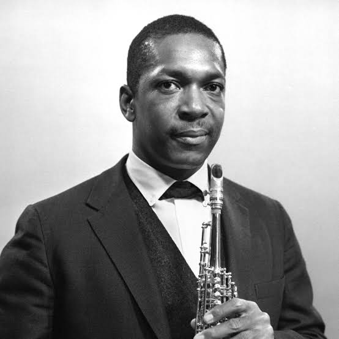
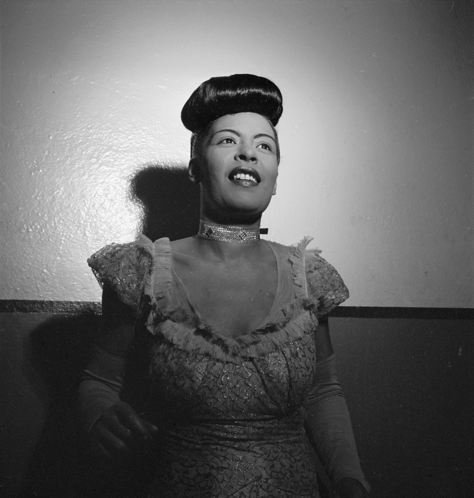

¿Cómo definimos a los 5 mejores artistas de jazz?
La idea aquí es destacar a los más grandes artistas de jazz, teniendo en cuenta su historia, su legado para la música y el grado de innovación que promovieron. Ya sea por su audacia, armonías diferentes, voz notable o por dialogar con movimientos poco comunes hasta entonces.
¡Disfruta de la lectura y sube el volumen de la música!
1. Miles Davis

Miles Davis se destacó como el trompetista de jazz más innovador. Responsable por grabar el álbum más vendido de todos los tiempos del género (Kind of Blue, en el 59), mezcló el jazz con la música clásica a mediados de los años cincuenta.
Miles Davis - The Doo-Bop Song.
2. Louis Armstrong

Famoso por su gran voz en la clásica y sencilla canción What a Wonderful World, hizo importantes alianzas en el jazz. Es el caso de Ella Fitzgerald, con quien grabó dos álbumes históricos: Ella and Louis (1956) y Porgy and Bess (1958).
Louis Armstrong - Cheek To Cheek
3. Ella Fitzgerald

Considerada pionera de la técnica vocal de improvisación scatting, es de hecho una de las artistas más completas y grandes de la historia del jazz. Su obra incluye el álbum Sings The Cole Porter Songbook, del año 56.
Cry Me A River-Ella Fitzgerald
4. John Coltrane

Se dice que su ideal era buscar la iluminación espiritual a través de la música. El álbum Blue Train es sin duda indispensable en la historia del género.
So What -John Coltrane
5. Billie Holiday

Uno de sus mayores éxitos llegó en 1944, cuando firmó un contrato con Decca Records y publicó Lover Man. Como curiosidad, cabe mencionar que apareció en la película New Orleans, junto a Louis Armstrong.
Lover Man - Billie Holiday